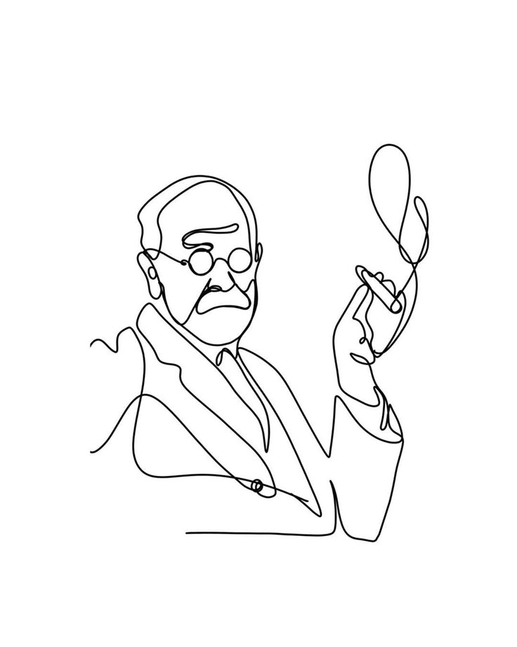

Primera Parte
Abordaje de los aportes pre-psicoanalíticos y de la creación del psicoanálisis en el 1900.
Clases particulares personalizadas para comprender y ampliar los conocimientos acerca de la famosa metapsicología freudiana.

Soy estudiante avanzada del profesorado de psicología en la UNLP. Me especializo en dar clases particulares de teoría psicoanalítica de 2do año.
Mi enfoque es ayudarte a comprender los textos de manera profunda y estructurada, trabajando juntos, de manera dialéctica para superar los desafíos y obstáculos que plantea la cursada.
Trabajamos con el programa de la materia de acuerdo a sus distintas partes correspondientes.
Abordaje de los aportes pre-psicoanalíticos y de la creación del psicoanálisis en el 1900.
Desarrollo de la primer teoría pulsional y distintos conceptos fundamentales como complejo Edipo, narcisismo, identificación entre otros.
Análisis del giro de los años 20 y el nuevo dualismo pulsional acompañado de los textos culturales clínicos.